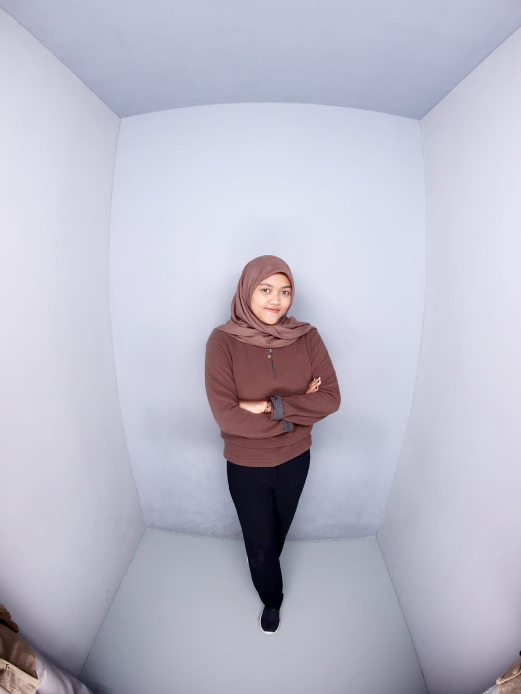

Saya Shofi Athifah, mahasiswi Teknik Informatika yang memiliki ketertarikan pada web development, UI/UX design, dan Internet of Things (IoT). Bagi saya, teknologi tidak hanya tentang bagaimana sistem bekerja, tetapi tentang bagaimana solusi tersebut benar-benar digunakan dan memberikan manfaat.
Dalam setiap prosesnya, saya terbiasa tidak hanya fokus pada fungsionalitas, tetapi juga pada pengalaman pengguna. Saya senang mengamati bagaimana orang berinteraksi dengan sebuah aplikasi—apa yang memudahkan, dan apa yang justru menghambat. Dari situ, saya mulai tertarik untuk memahami lebih dalam tentang UX research dan bagaimana desain dapat memengaruhi kenyamanan pengguna.
Ke depan, saya ingin terus mengembangkan kemampuan dalam membangun solusi digital yang tidak hanya berjalan dengan baik, tetapi juga relevan, mudah digunakan, dan benar-benar dibutuhkan.
SDI Nurul Ulum
Membuat sistem pembayaran sekolah menggunakan Laravel dan Bootstrap, mencakup fitur data siswa, tagihan, dan laporan keuangan yang sistematis.
Universitas 17 Agustus 1945 Surabaya
SMK Negeri 1 Bojonegoro